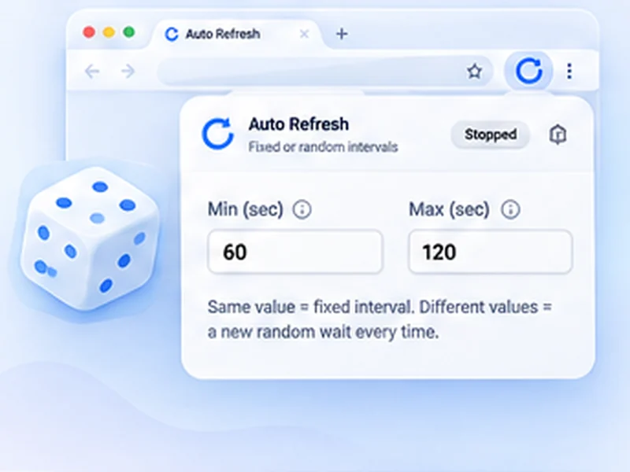

Never the same wait twice.
Give a minimum and a maximum, and every refresh picks a new wait somewhere in between. No two gaps are the same.

How random intervals works
Give a minimum and a maximum, and every refresh picks a new wait somewhere in between. No two gaps are the same.
Use a range when you check a page for a long time, such as a stock page or a queue. It spreads your requests out and is kinder to the site than hitting it on the exact same second each time.
Quick setup
Open the popup on the page you want.
Type the shortest wait into Min and the longest into Max.
Press Start. The countdown shows the wait chosen for this round.
What is a random auto refresh?
Instead of reloading on a fixed beat, a random auto refresh picks a new wait for every cycle, somewhere between a minimum and a maximum you set. Enter 20 and 45 seconds and one refresh might come after 23 seconds, the next after 41.
The countdown always shows the wait chosen for the current round, so you still know exactly when the next reload is due.
Why random beats a fixed timer
- It looks like a person, not a machine. Requests that arrive on the exact same second are easy for a website to flag.
- It is gentler on the site. Spreading reloads out avoids piling onto a busy server at regular intervals.
- It suits long waits. For a restock or a queue you may watch for hours, a range such as 30 to 90 seconds is a sensible default.
Good ranges to start with
Active watching
15 to 40 seconds, with a watch rule so it stops on a change.
Background checking
60 to 180 seconds, with a time limit.
Slow status pages
5 to 10 minutes (300 to 600 seconds).
A worked example: a 30 to 90 second range
You are watching a product page that may restock at any time today. Type 30 into Min and 90 into Max and press Start. The first refresh happens immediately. The counter then shows the wait picked for this round, perhaps 0:52, then 1:14, then 0:37.
Over an hour that averages one request a minute, the same as a fixed 60-second timer, but without the regular rhythm.
Fixed or random: which should you choose?
Choose fixed when
the page is your own tool (a dashboard, a build page, a local site) or when you want a predictable display on a wall screen.
Choose random when
you are checking someone else's website for a long time, especially a shop, a booking page or a results page under load.
Common mistakes
- A range that is too narrow. 29 to 31 seconds is fixed in all but name. Give it room, such as 30 to 90.
- A minimum that is too low. With 1 to 120 seconds, some waits will be only a second or two.
- Assuming it makes you invisible. Sites still count requests. Random timing is politeness, not a disguise.
Smart auto refresh: random timing plus a watch rule
The most useful set-up for waiting on something is a random range together with a page change rule and a time limit. The tab checks at an easy pace, stops the moment the page changes, and gives up by itself if nothing happens.
At a glance
- A range, not a rhythm. Set 20 and 45 and one wait might be 23 seconds, the next 41. A fixed beat is easy for a site to spot; a range is not.
- Free, not locked away. Random intervals are a paid extra in some refresh tools. Here they are part of the basic timer.
- Still fully in control. Limits, page watching and smart pause all work the same with a random range.
Questions, answered.
How do I turn on random intervals?
Type different values into Min and Max. That is all; there is no separate switch.
Is random refresh a paid feature?
No. It is free here, although some refresh extensions charge for it.
Can I see when the next refresh will happen?
Yes. The popup, the on-page counter and optionally the toolbar icon show the countdown for the current wait.
Does a random interval avoid being blocked?
It reduces the obvious pattern, but it does not bypass rate limits or a site's rules.
Can I use decimals?
Yes, in steps of half a second, with a minimum of one second.
How is the wait chosen?
Evenly at random between your two values, fresh for every refresh.
What if Min is larger than Max?
The two values are swapped for you.
Try it on your next open tab.
Free for Chrome and Firefox, with no account required.
Not seeing the feature you need?
Share the browser task you would like to make easier. Your idea helps guide what gets built next.